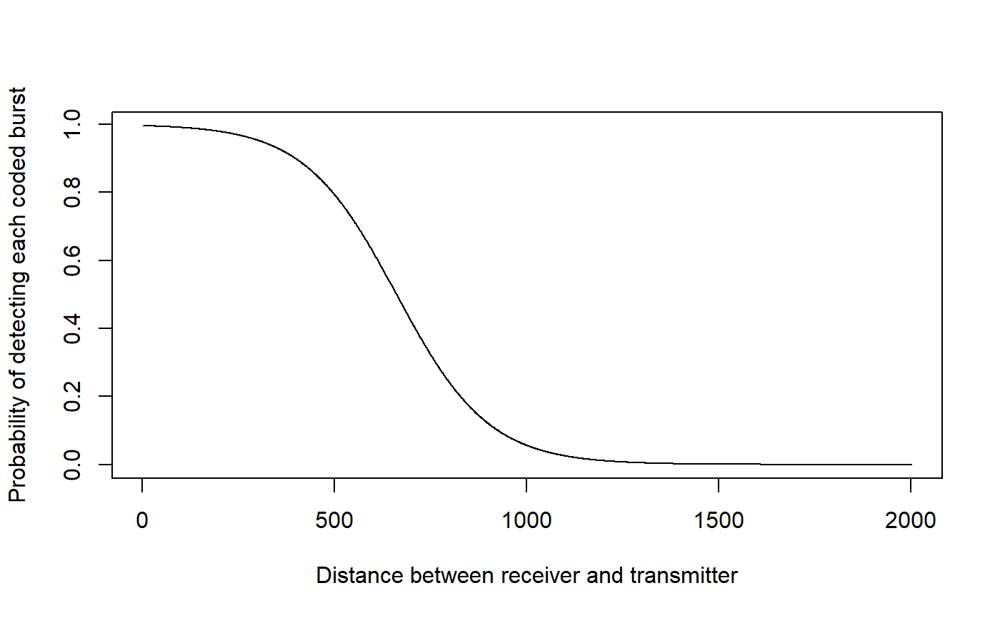
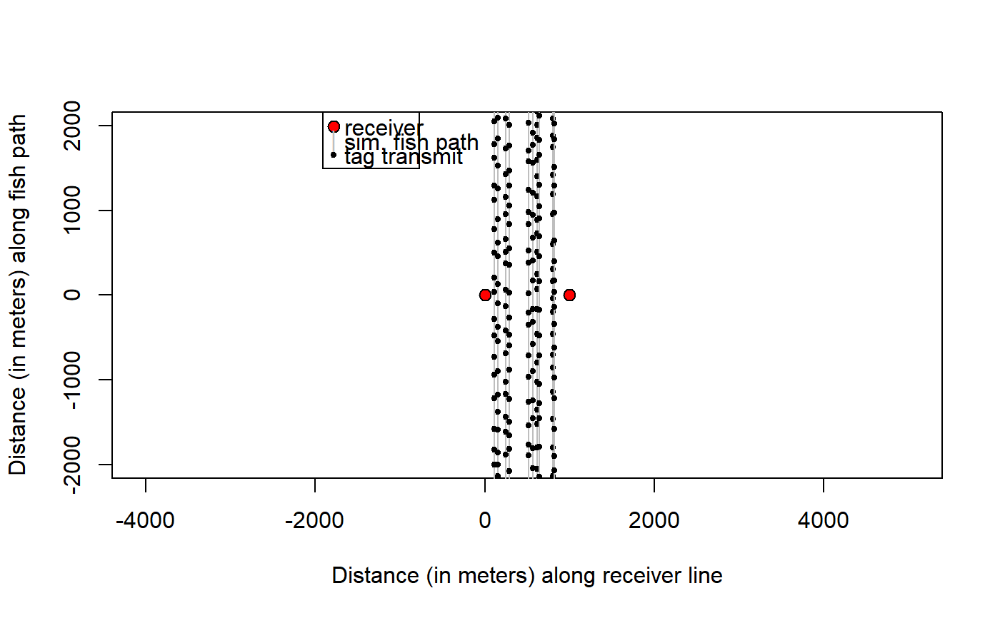
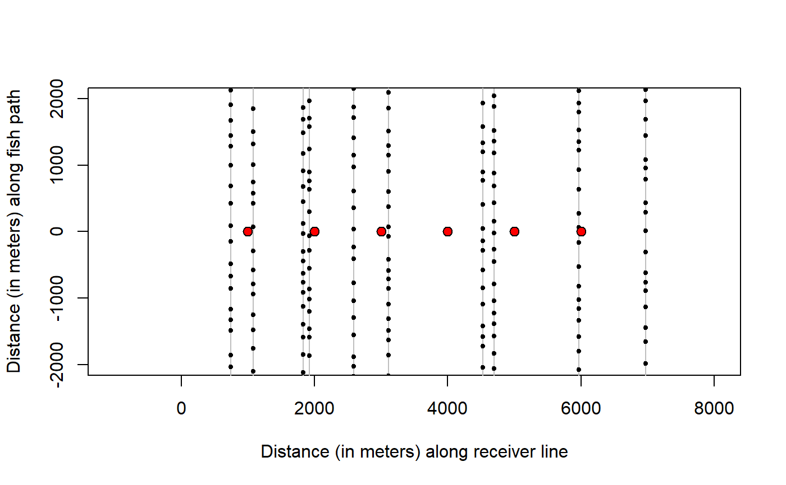
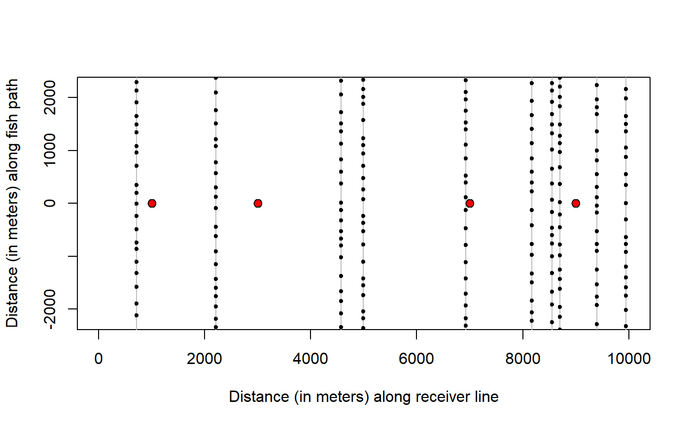
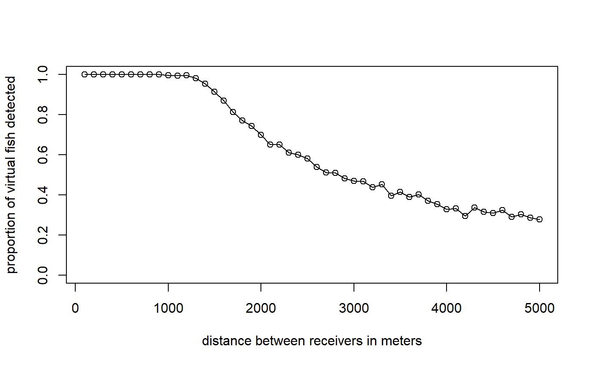
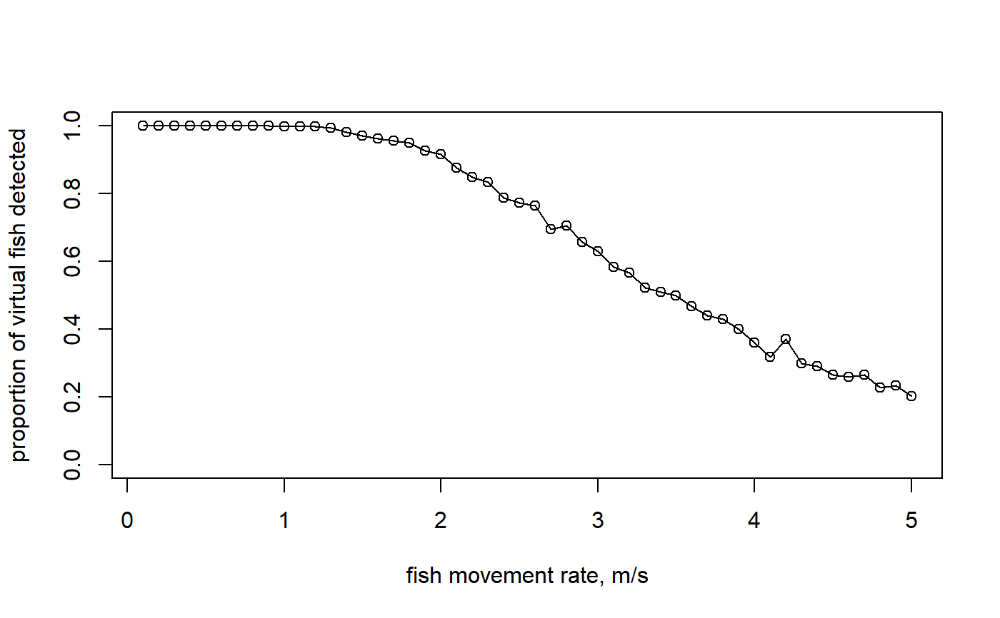
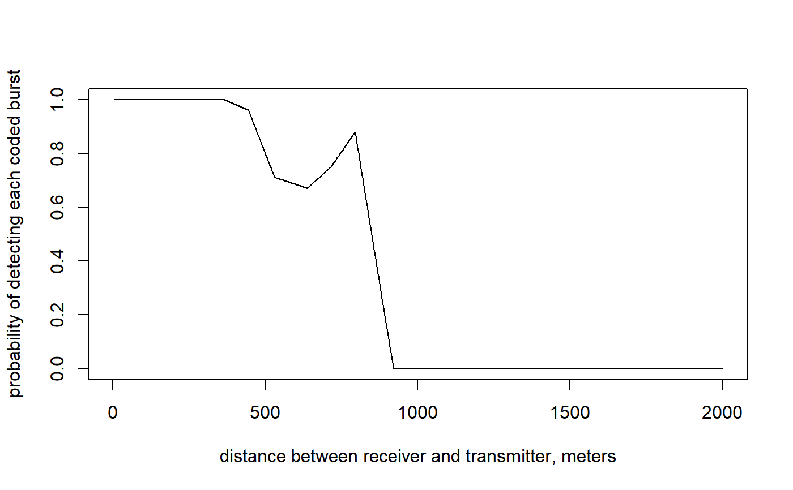
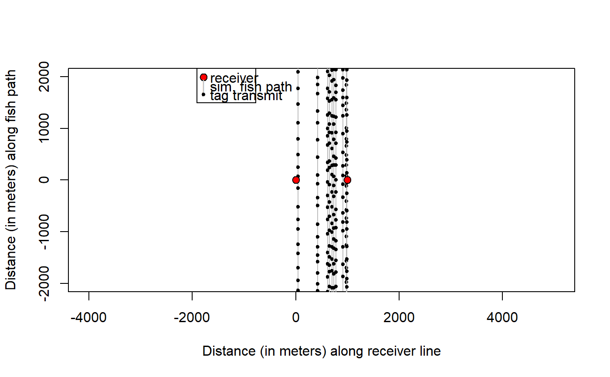

receiver_line_det_sim.RdEstimate, by simulation, the probability of detecting an acoustic-tagged fish on a receiver line, given constant fish velocity (ground speed), receiver spacing, number of receivers, and detection range curve.
receiver_line_det_sim(vel = 1, delayRng = c(120, 360), burstDur = 5, recSpc = 1000, maxDist = 2000, rngFun, outerLim = c(0, 0), nsim = 1000, showPlot = FALSE)
| vel | A numeric scalar with fish velocity in meters per second. |
|---|---|
| delayRng | A 2-element numeric vector with minimum and maximum delay (time in seconds from end of one coded burst to beginning of next) |
| burstDur | A numeric scalar with duration (in seconds) of each coded burst (i.e., pulse train). |
| recSpc | A numeric vector with distances (in meters) between receivers.
The length of vector is N-1, where N is number of receivers. One receiver
is simulated when |
| maxDist | A numeric scalar with maximum distance between tagged fish and any receiver during simulation (i.e., sets spatial boundaries) |
| rngFun | A function that defines detection range curve; must accept a numeric vector of distances and return a numeric vector of detection probabilities at each distance. |
| outerLim | A two-element numeric vector with space (in meters) in which simulated fish are allowed to pass to left (first element) and right (second element) of the receiver line. |
| nsim | Integer scalar with the number of crossings (fish) to simulate |
| showPlot | A logical scalar. Should a plot be drawn showing receivers and fish paths? |
A data frame with one column:
The proportion of simulated fish that were detected more than once on any single receiver.
Virtual tagged fish (N=nsim) are "swum" through a virtual receiver
line. The first element of recSpc determines spacing between first
two receivers in the line, and each subsequent element of recSpc
determine spacing of subsequent receivers along the line, such that the
number of receivers is equal to length(recSpc) + 1. Each fish moves
at constant velocity (vel) along a line perpendicular to the
receiver line. The location of each fish path along the receiver line is
random (drawn from uniform distribution), and fish can pass outside the
receiver line (to the left of the first receiver or right of last receiver)
if outerLim[1] or outerLim[2] are greater than 0 meters.
Each fish starts and ends about maxDist meters from the receiver
line.
A simulated tag signal is transmitted every delayRng[1] to
delayRng[2] seconds. At time of each transmission, the distance is
calculated between the tag and each receiver, and rngFun is used to
calculate the probability (p) that the signal was detected on each receiver.
Detection or non-detection on each receiver is determined by a draw from a
Bernoulli distribution with probability p.
For application example, see:
Hayden, T.A., Holbrook, C.M., Binder, T.R., Dettmers, J.M., Cooke, S.J.,
Vandergoot, C.S. and Krueger, C.C., 2016. Probability of acoustic
transmitter detections by receiver lines in Lake Huron: results of
multi-year field tests and simulations. Animal Biotelemetry, 4(1), p.19.
https://animalbiotelemetry.biomedcentral.com/articles/10.1186/s40317-016-0112-9
#EXAMPLE 1 - simulate detection on line of ten receivers #Define detection range function (to pass as rngFun) # that returns detection probability for given distance # assume logistic form of detection range curve where # dm = distance in meters # b = intercept and slope pdrf <- function(dm, b=c(5.5, -1/120)){ p <- 1/(1+exp(-(b[1]+b[2]*dm))) return(p) } #preview detection range curve plot(pdrf(0:2000),type="l",ylab="Probability of detecting each coded burst", xlab="Distance between receiver and transmitter")#Simulate detection using pdrf; default values otherwise dp <- receiver_line_det_sim(rngFun=pdrf) dp#> [1] 0.999#Again with only 10 virtual fish and optional plot to see simulated data dp <- receiver_line_det_sim(rngFun=pdrf, nsim=10, showPlot=T) #w/ optional plotdp#> [1] 1#Again but six receivers and allow fish to pass to left and right of line dp <- receiver_line_det_sim(rngFun=pdrf, recSpc=rep(1000,5), outerLim=c(1000, 1000), nsim=10, showPlot=T)dp#> [1] 0.9#Again but four receivers with irregular spacing dp <- receiver_line_det_sim(rngFun=pdrf, recSpc=c(2000,4000,2000), outerLim=c(1000, 1000), nsim=10, showPlot=T)dp#> [1] 0.7#EXAMPLE 2 - summarize detection probability vs. receiver spacing #two receivers only, spaced 'spc' m apart #define scenarios where two receiver are spaced spc <- seq(100,5000, 100) #two receivers spaced 100, 200, ... 5000 m #loop through scenarios, estimate detection probability for each for(i in 1:length(spc)){ if(i==1) dp <- numeric(length(spc)) #pre-allocate dp[i] <- receiver_line_det_sim(recSpc=spc[i], rngFun=pdrf) } cbind(spc,dp) #view results#> spc dp #> [1,] 100 1.000 #> [2,] 200 1.000 #> [3,] 300 1.000 #> [4,] 400 1.000 #> [5,] 500 1.000 #> [6,] 600 1.000 #> [7,] 700 1.000 #> [8,] 800 1.000 #> [9,] 900 1.000 #> [10,] 1000 0.998 #> [11,] 1100 0.997 #> [12,] 1200 0.991 #> [13,] 1300 0.979 #> [14,] 1400 0.950 #> [15,] 1500 0.904 #> [16,] 1600 0.874 #> [17,] 1700 0.801 #> [18,] 1800 0.778 #> [19,] 1900 0.741 #> [20,] 2000 0.716 #> [21,] 2100 0.656 #> [22,] 2200 0.632 #> [23,] 2300 0.600 #> [24,] 2400 0.571 #> [25,] 2500 0.563 #> [26,] 2600 0.538 #> [27,] 2700 0.512 #> [28,] 2800 0.477 #> [29,] 2900 0.459 #> [30,] 3000 0.473 #> [31,] 3100 0.481 #> [32,] 3200 0.438 #> [33,] 3300 0.425 #> [34,] 3400 0.414 #> [35,] 3500 0.419 #> [36,] 3600 0.388 #> [37,] 3700 0.371 #> [38,] 3800 0.372 #> [39,] 3900 0.356 #> [40,] 4000 0.340 #> [41,] 4100 0.354 #> [42,] 4200 0.318 #> [43,] 4300 0.345 #> [44,] 4400 0.307 #> [45,] 4500 0.316 #> [46,] 4600 0.333 #> [47,] 4700 0.292 #> [48,] 4800 0.291 #> [49,] 4900 0.301 #> [50,] 5000 0.284#plot results plot(spc, dp, type="o",ylim=c(0,1), xlab="distance between receivers in meters", ylab="proportion of virtual fish detected")# e.g., >95% virtual fish detected up to 1400 m spacing in this example #EXAMPLE 3 - summarize detection probability vs. fish swim speed #define scenarios of fish movement rate swim <- seq(0.1, 5.0, 0.1) #constant velocity for(i in 1:length(swim)){ if(i==1) dp <- numeric(length(swim)) #pre-allocate dp[i] <- receiver_line_det_sim(vel=swim[i], rngFun=pdrf) } cbind(swim,dp) #view results#> swim dp #> [1,] 0.1 1.000 #> [2,] 0.2 1.000 #> [3,] 0.3 1.000 #> [4,] 0.4 1.000 #> [5,] 0.5 1.000 #> [6,] 0.6 1.000 #> [7,] 0.7 0.999 #> [8,] 0.8 1.000 #> [9,] 0.9 1.000 #> [10,] 1.0 0.996 #> [11,] 1.1 0.996 #> [12,] 1.2 0.994 #> [13,] 1.3 0.993 #> [14,] 1.4 0.984 #> [15,] 1.5 0.975 #> [16,] 1.6 0.968 #> [17,] 1.7 0.959 #> [18,] 1.8 0.936 #> [19,] 1.9 0.927 #> [20,] 2.0 0.912 #> [21,] 2.1 0.875 #> [22,] 2.2 0.839 #> [23,] 2.3 0.827 #> [24,] 2.4 0.797 #> [25,] 2.5 0.759 #> [26,] 2.6 0.767 #> [27,] 2.7 0.719 #> [28,] 2.8 0.688 #> [29,] 2.9 0.657 #> [30,] 3.0 0.645 #> [31,] 3.1 0.609 #> [32,] 3.2 0.583 #> [33,] 3.3 0.529 #> [34,] 3.4 0.496 #> [35,] 3.5 0.479 #> [36,] 3.6 0.473 #> [37,] 3.7 0.434 #> [38,] 3.8 0.429 #> [39,] 3.9 0.400 #> [40,] 4.0 0.366 #> [41,] 4.1 0.338 #> [42,] 4.2 0.360 #> [43,] 4.3 0.303 #> [44,] 4.4 0.285 #> [45,] 4.5 0.264 #> [46,] 4.6 0.243 #> [47,] 4.7 0.232 #> [48,] 4.8 0.213 #> [49,] 4.9 0.220 #> [50,] 5.0 0.210#plot results plot(swim, dp, type="o", ylim=c(0,1), xlab="fish movement rate, m/s", ylab="proportion of virtual fish detected")# e.g., >95% virtual fish detected up to 1.7 m/s rate in this example # e.g., declines linearly above 1.7 m/s #EXAMPLE 4 - empirical detection range curve instead of logistic #create data frame with observed det. efficiency (p) at each distance (x) edr <- data.frame( x=c(0,363,444,530,636,714,794,889,920), #tag-receiver distance p=c(1,1,0.96,0.71,0.67,0.75,0.88,0.21,0)) # detection prob #now create a function to return the detection probability # based on distance and linear interpolation within edr # i.e., estimate p at given x by "connecting the dots" edrf <- function(dm, my.edr=edr) { p <- approx(x=my.edr$x,y=my.edr$p,xout=dm, rule=2)$y return(p) } #preview empirical detection range curve plot(edrf(0:2000),type="l", ylab="probability of detecting each coded burst", xlab="distance between receiver and transmitter, meters")#use empirical curve (edrf) in simulation dp <- receiver_line_det_sim(rngFun=edrf, nsim=10, showPlot=T) #w/ optional plotdp#> [1] 1